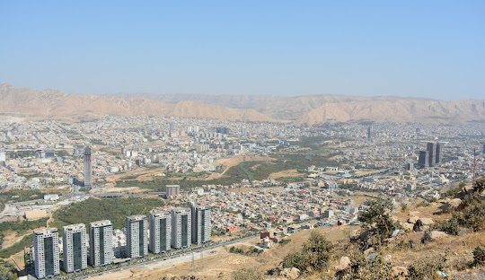

Dhock

n the 3rd century BC, Erbil was an independent power in its area. It was conquered for a time by the Gutians. Beginning in the late 2nd century BC, it came under Assyrian control. Subsequent to this, it was part of the geopolitical province of Assyria under several empires in turn, including the Median Empire, the Achaemenid Empire (Achaemenid Assyria), Macedonian Empire, Seleucid Empire, Armenian Empire, Parthian Empire, Roman Assyria and Sasanian Empire, as well as being the capital of the tributary state of Adiabene between the mid-second century BC and early 2nd century AD. In ancient times the patron deity of the city was Ishtar of Arbela.[11]